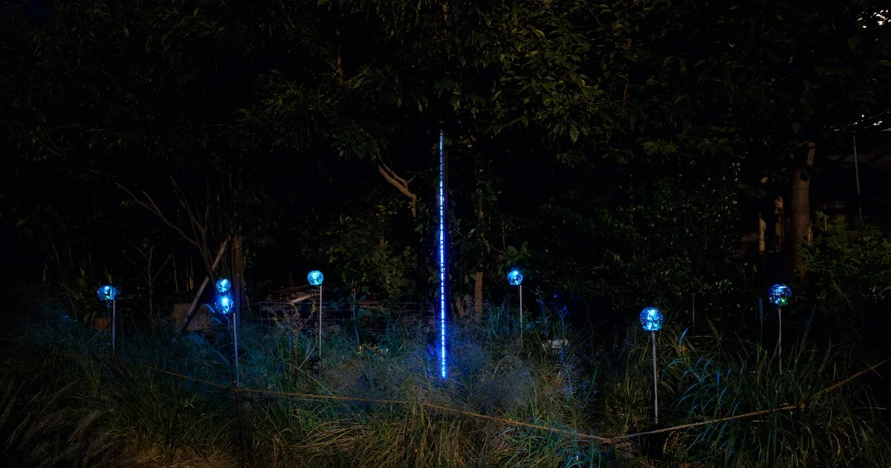
Botanical Intelligence: Moon Edition
担当共同作家 / テクニカルディレクション / ハードウェアエンジニアリング
岸裕真との共作としてムーンアートナイト下北沢2026で発表。植物のデータを受け取る30台のBIデバイスと、192桁の14セグメントLED灯具「glyphline192」で音と光を構成した。テクニカルディレクションとハードウェア開発を担当。
作品紹介・クレジットabstractengine.com
HARDWARE ENGINEERING / TECHNICAL DIRECTION
ハードウェアエンジニア / テクニカルディレクターAbstract Engine
ロボティクス技術を、
アートとエンターテイメントの現場へ。
19 works / 2022–2026
19件

担当共同作家 / テクニカルディレクション / ハードウェアエンジニアリング
岸裕真との共作としてムーンアートナイト下北沢2026で発表。植物のデータを受け取る30台のBIデバイスと、192桁の14セグメントLED灯具「glyphline192」で音と光を構成した。テクニカルディレクションとハードウェア開発を担当。
作品紹介・クレジットabstractengine.com
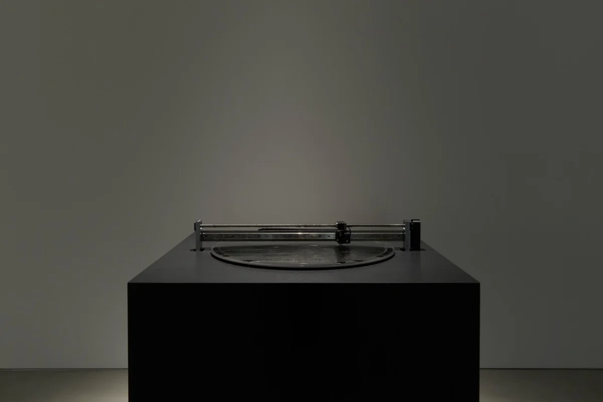
担当装置企画 / Z軸機構設計 / 回路設計 / プロッター制御システム開発 / 彫刻運用
KOTARO NUKAGA（天王洲）で開催されたライゾマティクスの個展。ステンレス円盤にダイヤモンド針で軌跡を刻む極座標プロッターについて、装置企画、Z軸機構・回路設計、制御システム開発、彫刻運用を担当した。
作品紹介・クレジットrhizomatiks.com
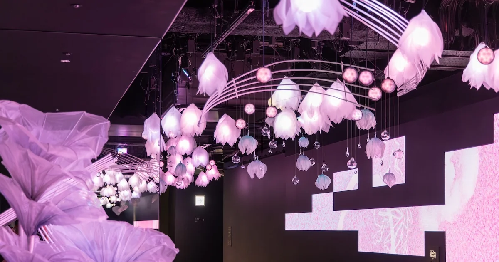
担当照明ハードウェアエンジニアリング
SHIBUYA SKYの屋内展望回廊を花と雲で構成したインスタレーション。球状LED照明「PixOrb」を用いた環境演出設備「NEBULA」の照明ハードウェアエンジニアリングを担当した。
作品紹介・クレジットabstractengine.com
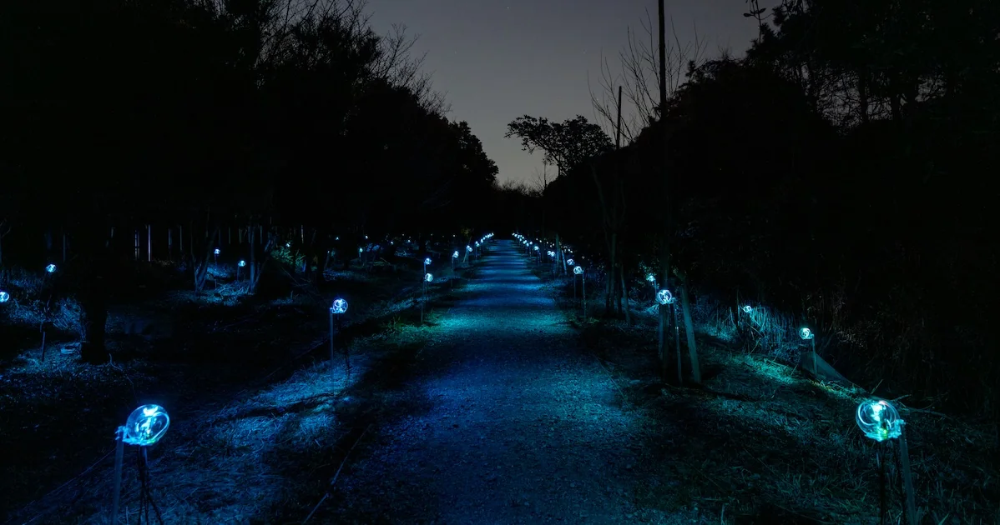
担当テクニカルディレクション / ハードウェアエンジニア
夜の森を舞台に植物の生体データから音と光を生成するインスタレーション。全体のシステム設計とハードウェア面のテクニカルディレクションを担当。LLM推論用NPU搭載のBIデバイス100台について、サブ基板の新規開発・筐体設計・量産・設置、デバイス間ネットワークの構築などを行った。
作品紹介・クレジットabstractengine.com
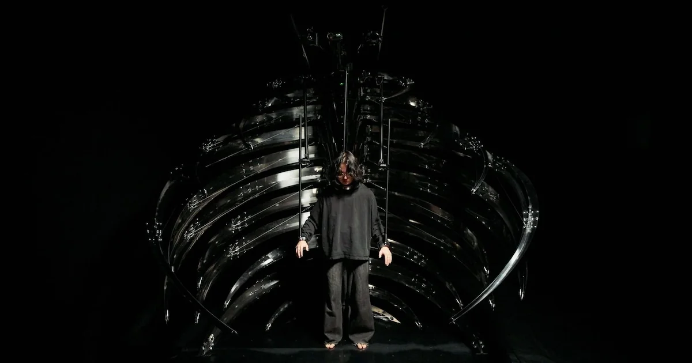
担当テクニカルディレクション / ハードウェアエンジニア
AIに制御される外骨格デバイス。肋骨型什器の各骨の先端に並ぶ24枚のセンサー基板を新規設計し、装着者の両手首と首を操る長尺ロボットアーム3本（QDDモーター駆動の冗長機構）の機構・制御回路・制御システム一式を開発。全体のテクニカルディレクションも担当。
作品紹介・クレジットabstractengine.com
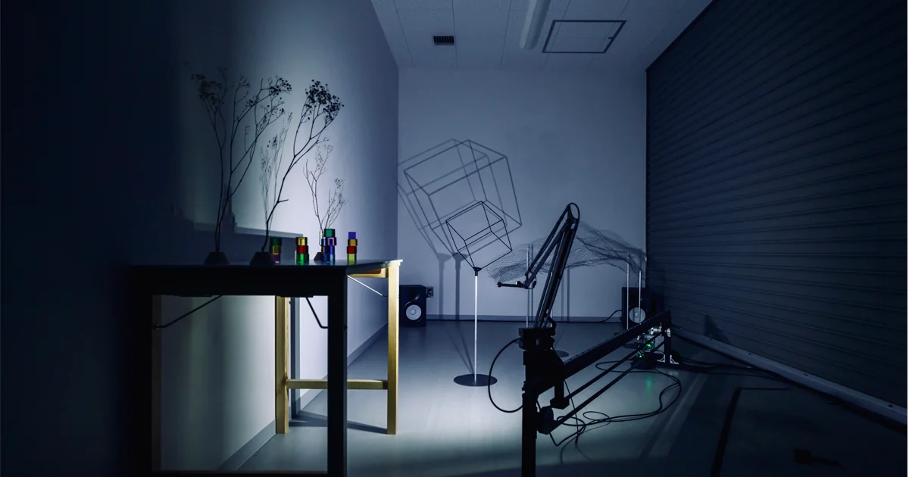
担当アーティスト / エンジニア
TOKYO PROTOTYPEで発表したShadowUpのインスタレーション。ロボットアームに搭載したステレオライトで、両眼視差と運動視差を組み合わせて影を立体化する。Artist / Engineerとして参加した。
作品紹介・クレジットabstractengine.com
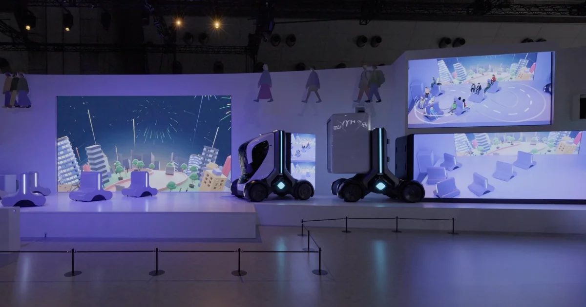
担当テクニカルディレクター
いすゞグループブースのステージショーにテクニカルディレクターとして参加。全方位移動ロボットを用いた小型モビリティと、その動きに連動するAR演出により、未来の物流・モビリティを表現した。
作品紹介・クレジット作品映像abstractengine.com
担当立案 / 開発 / 制作
球体表面に高密度LEDを配置した独自開発の球状灯具「PixOrb」。プロジェクトの立案、灯具本体のハードウェア開発までを担当した。本照明は渋谷スカイの常設インスタレーション「NEBULA」として実装され四季を通して活用されている。
作品紹介・クレジットabstractengine.com
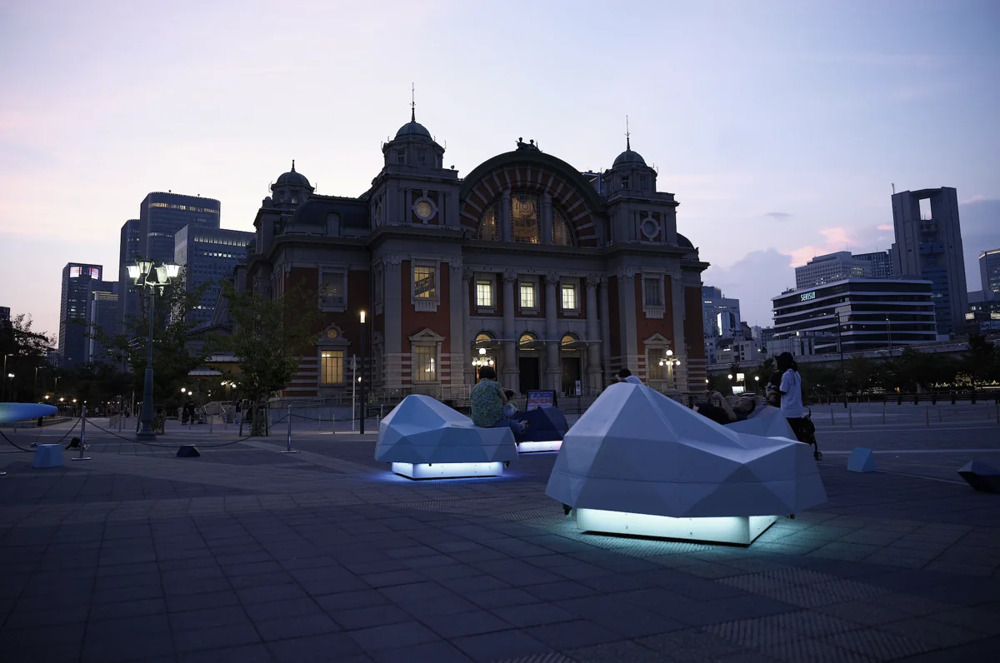
担当自律移動制御
株式会社コトブキとのコラボレーションによる、人と共生する移動するファニチャー。屋外環境下での自律移動アルゴリズムと制御システムの設計・実装を担当した。
作品紹介・クレジットtownscape.kotobuki.co.jp
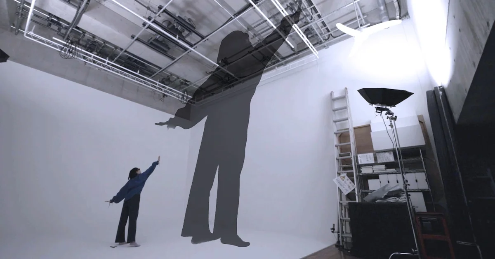
担当テクニカルディレクション / 立案・開発
独自開発のステレオライト®システム（特許出願中）により、影や光が空中に浮き上がるアナログ立体映像が立ち現れる特殊な体験。プロジェクトの企画立案、コアシステムの研究開発、各会場への実装までを横断的に担当。様々な形態で作品を発表している。
作品紹介・クレジットabstractengine.com
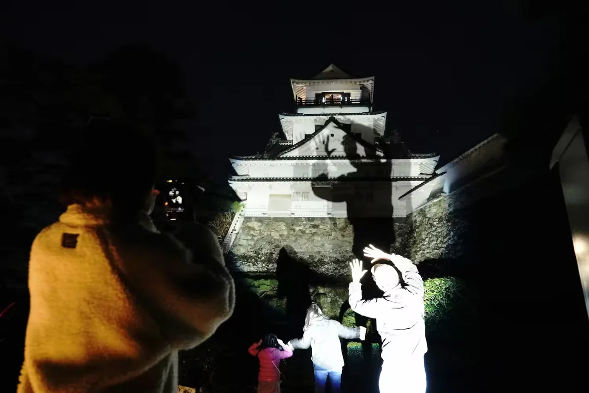
担当テクニカルディレクション / インスタレーション設計・制作
重要文化財・高知城を舞台にしたシャドウアップ™の大型展開（2024.12–2025.01）。企画段階から、全体のテクニカルディレクション、およびインスタレーションのための装置の設計と開発、設置まで担当した。
作品紹介・クレジットkochipark.jp
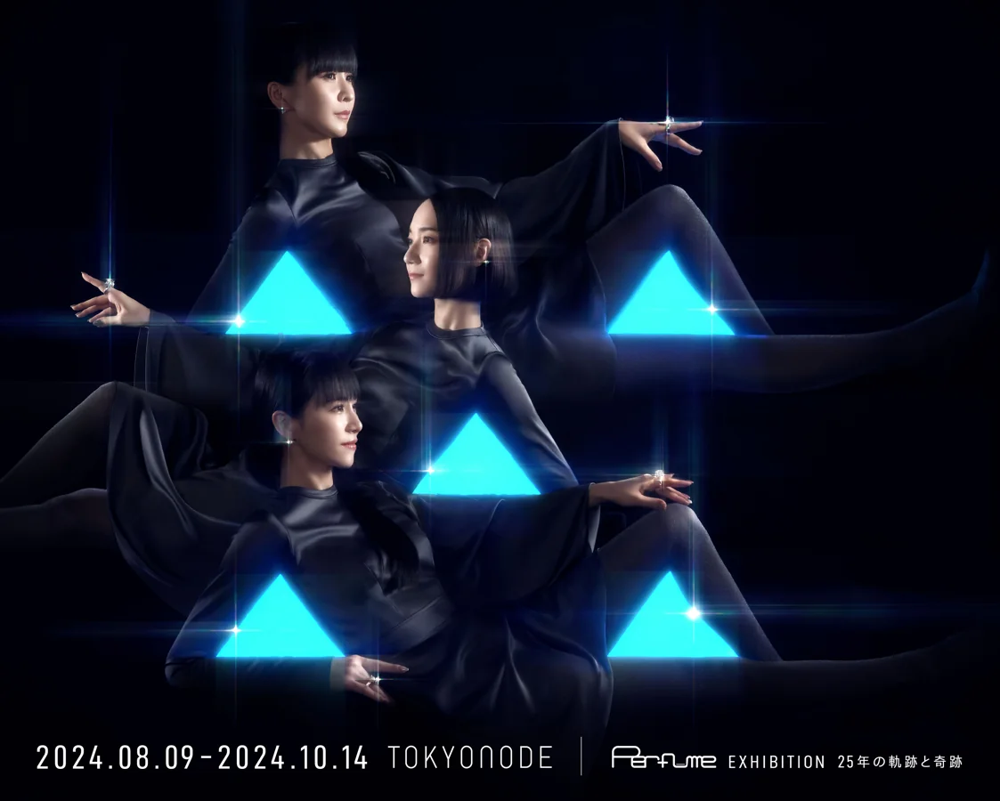
担当オブジェ設計 / キャリブレーションシステム
TOKYO NODEで開催されたPerfumeの展覧会に参加。「We are Perfume」のオブジェ設計とキャリブレーションシステムを担当した。
作品紹介・クレジットrhizomatiks.com
担当Plan / UNI-ONE linked control program
SXSW2024（オースティン）に出展されたHondaのXRモビリティ体験。企画プランニングに参加し、UNI-ONEならではのXRの仕掛けを考案。XR体験と同期してパーソナルモビリティ「UNI-ONE」を動かすための連動制御プログラムの開発を担当した。
作品紹介・クレジットabstractengine.com
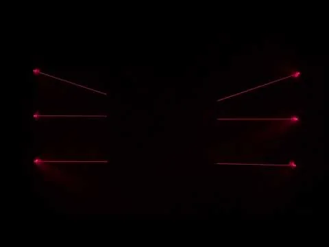
担当文化庁クリエイター支援事業 / 個人制作
文化庁メディア芸術クリエイター育成支援事業の採択を受けて個人で制作したプロトタイプ。レーザー光を「ロープ」のように扱い、空間に張り渡された光線の形状をリアルタイムに変調する独自の表現装置を開発。企画・機構・制御まで全工程を担当。
作品紹介・クレジットyoutube.com
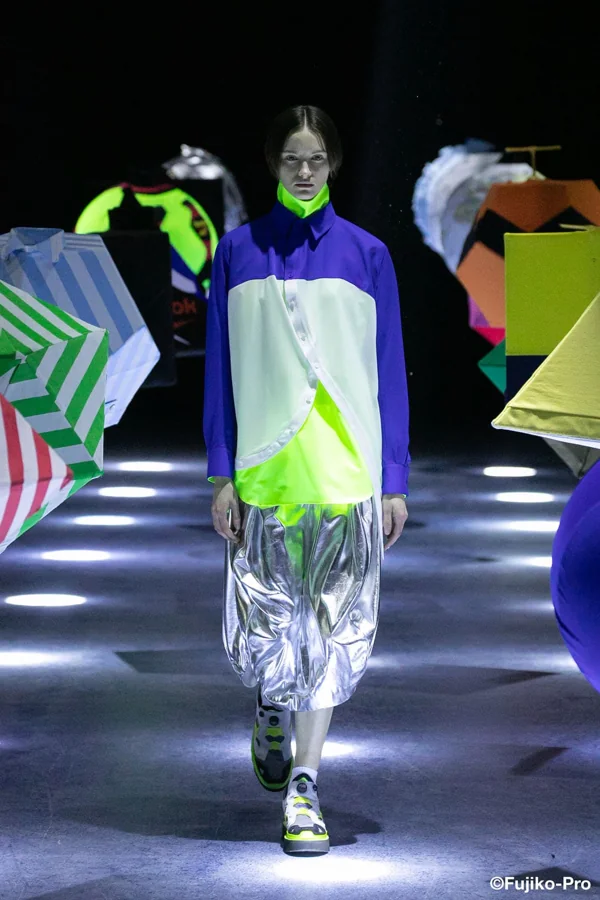
担当技術協力 / ハードウェアエンジニア
ANREALAGEのパリコレクション 2024 A/Wに技術協力。オブジェクトを浮遊させるための機構設計・制作を行った。
作品紹介・クレジットcasabrutus.com
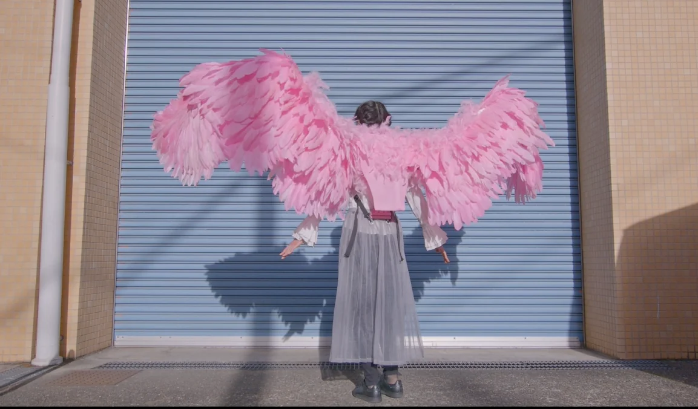
担当特殊衣装 設計・制作・納品
羽ばたき動作を行う可動式の翼衣装。リモコン操作により様々なポーズ・モーションが可能。持ち運びや着脱を考慮した軽量・コンパクトな機構として設計・制作した。
作品紹介・クレジットtwitter.com
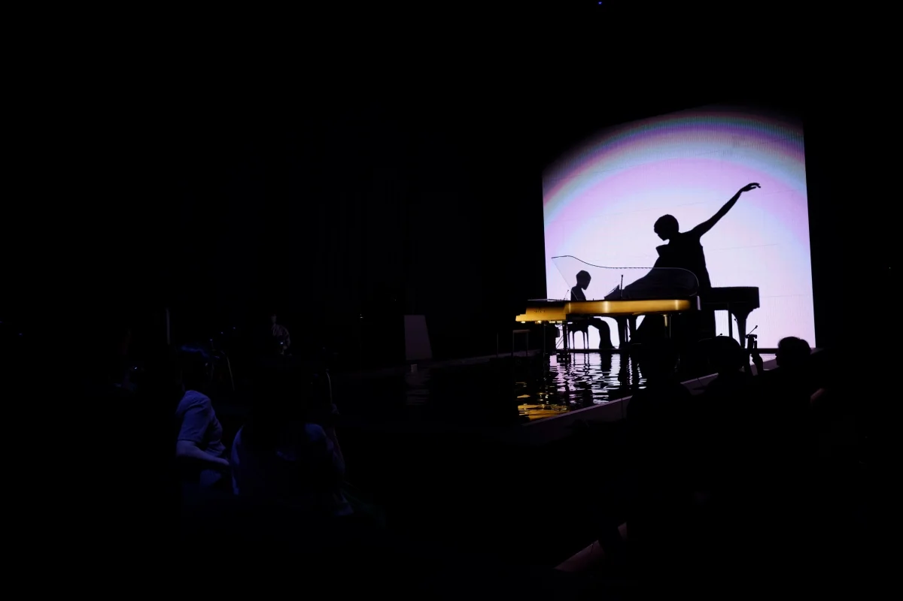
担当Rhizomatiks × ELEVENPLAY / ハードウェア・装置開発
RhizomatiksとELEVENPLAYによる、身体と機械が協奏する没入型パフォーマンス作品。本作のために開発した「ステレオライト」と「波紋制御システム」の2つの装置開発を担当した。
作品紹介・クレジットrhizomatiks.com
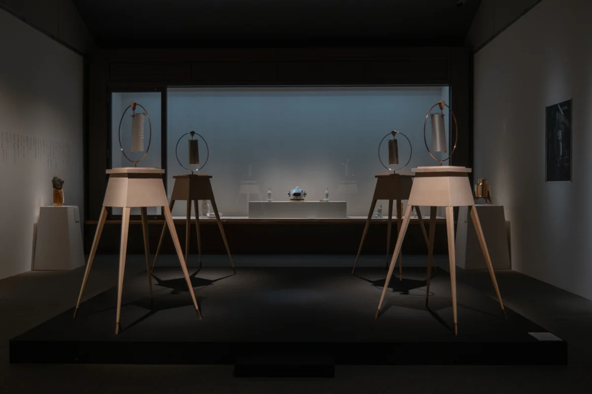
担当技術協力 / 装置設計
スタイリスト三田真一による個展。音象限儀（木工芸 ＋ 製缶 ＋ Rhizomatiks ＋ NF）においてフィルムを動かすためのからくりの開発・実装を担当。
作品紹介・クレジットkeidai.art
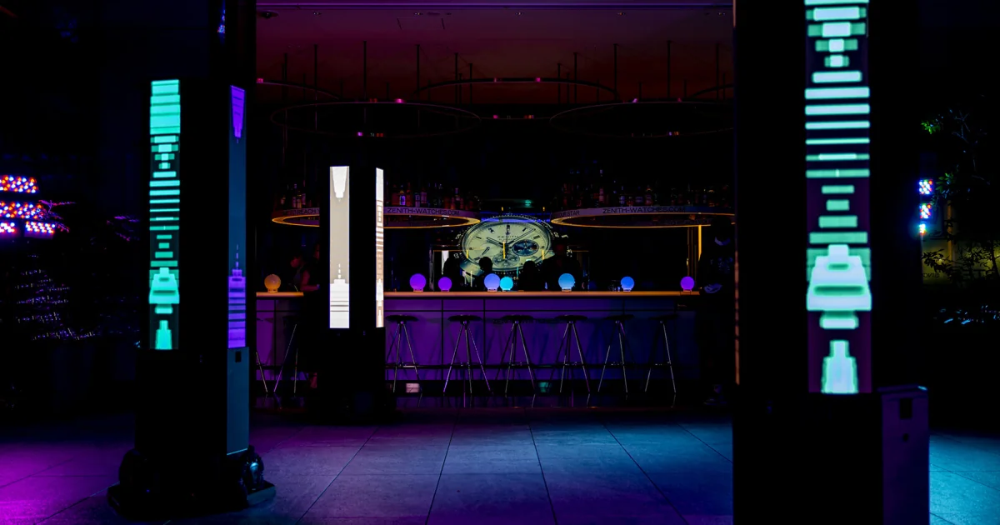
担当LED Robot Control System Design & Production
アートフェスnorm Art & Design Festival 2022にて初披露されたライゾマティックスの新作インスタレーション。LEDディスプレイを搭載したロボット群の自律移動制御システムの設計・制作を担当した。
作品紹介・クレジットrhizomatiks.com
該当する作品がありません。検索語や年を変更してください。
1993年京都生まれ。京都大学工学部物理工学科を卒業し、京都大学大学院工学研究科機械理工学専攻を修了、2021年に同専攻にて博士（工学）を取得し、京都大学メカトロニクス研究室にて研究員を務めた。日本学術振興会特別研究員DC1。学位研究では複雑環境におけるヘビ型ロボットの制御に取り組んだ。並行して研究室内のチームを率いて多機能レスキューロボットを開発し、ロボカップ世界大会2019レスキュー実機リーグで総合優勝を果たすなど活躍。それらの成果から2018年度日本機械学会奨励賞（研究）、国際レスキューシステム研究機構2019年度競基弘技術貢献賞、2020年度システム制御情報学会学会賞奨励賞、平成29年度京都大学総長賞、令和元年度京都大学総長賞などを受賞。
2022年からアブストラクトエンジンに所属し、ハードウェアエンジニア・テクニカルディレクターとして研究開発・実装を担う。Rhizomatiks作品にも参加するほか、アーティストとのコラボレーションも行う。メカ、電子回路、制御工学、ソフトウェアの総合的な設計開発を得意とし、アート・エンターテイメント分野でのロボティクス技術を活かした企画やディレクションも行う。主な参加作品は「Shadow Up」シリーズ、「"Syn : 身体感覚の新たな地平" by Rhizomatiks × ELEVENPLAY」、「Perfume Disco-Graphy 25年の軌跡と奇跡」、SHIBUYA SKY 常設の球状LED照明「PixOrb / NEBULA」、岸裕真とのコラボレーション作品「xoxo-skeleton」「平行森林」「Botanical Intelligence: Moon Edition」、ライゾマティクス「After Understanding」など。
5 talks / 2 media appearances
ラジオ・Podcast対談
J-WAVE TOPPAN INNOVATION WORLD ERA
真鍋大度との対談。ロボティクス研究からアート・エンターテインメントへと広がる活動を紹介。
招待講演
京都大学 Motion Fascination Seminar（小森研究室主催） / 京都大学 桂キャンパス
小森雅晴の招待により、京都大学の機械系の学部生・大学院生に向けて講演。ロボティクス研究からアート・エンターテインメント作品の制作へと広がる実践を紹介した。
トークセッション
Dentsu Lab Tokyo OPEN LAB 2025 / 電通ホール
岸裕真、斧涼之介と、モノづくりの実装とディレクションについて対話。
ゲスト講演・デモ
日本VR学会 A+E Meetup-5 / 東京大学情報学環オープンスタジオ / オンライン
制作事例とプロトタイピングについて講演し、立体影のデモを実施。
パネル登壇
Interop Tokyo 2025 / Internet x Media Summit / 幕張メッセ
多様なディスプレイが生み出す新しいメディア表現とビジネスチャンスについて、藤本実、山岡潤一と登壇。モデレーター：久野崇文。
講演
第179回U2A研究会 / グランフロント大阪 / オンライン
ライブ・エンターテインメントをテーマとした研究会で、研究から制作現場までの実践を紹介。
4 projects
2014–2021
学位研究 / 単独開発
ヘビ型ロボットの動作設計と制御を学位研究として遂行。世界初となるヘビ型ロボットによるはしご登りに成功し、険しい不整地の移動、配管上のフランジ乗り越えなど多様な動作を実現。IEEE Transactions on Robotics をはじめとする主要国際ジャーナルで筆頭論文を複数発表。
2017–2021
チームリーダー / SHINOBI
多機能クローラ型レスキューロボット FUHGA シリーズを開発。研究室内チーム SHINOBI を率いて毎年一からロボットを設計・製作。FUHGA2 は World Robot Summit 2018 STM 部門で経済産業大臣賞（賞金1000万円）を受賞、改良機は RoboCup 世界大会 2019 で日本チーム14年ぶりの総合優勝。後継機 FUHGA3 は RoboCup 2021 Virtual で Best in Class を複数受賞。
2014–2016
ロボット開発
球体ディスプレイを乗せた移動ロボット。ベース移動と球体表示の同期/非同期によって「滑り」「転がり」など多様な動きの錯視を演出可能。国際会議 MoMM 2016（Singapore）と国際ジャーナル IJPCC 2017 で発表し、Highly Commended Award を受賞。
2012–2016
個人製作
学部時代を中心にロボトレース・キャチロボなどの個人ロボコンに参加。代表作「OmnimO」は全方位フォトリフレクタ配列により向きを変えずにラインを追従し、一周目でコース記憶・二周目で加減速制御を行うアルゴリズムを実装。多数の特別賞を受賞。
特開2026-114184
特願2024-230384
発明者：坂本洋一、竹森達也
出願人：株式会社アブストラクトエンジン
出願 2024.12.26 / 公開 2026.07.08
特許第7023174号
特願2018-090013 / 特開2019-195864
発明者：水野大輔、森本貴景、松野文俊、遠藤孝浩、竹森達也
出願人：三菱電機株式会社
出願 2018.05.08 / 公開 2019.11.14 / 特許公報発行 2022.02.21
Belal A. Elsayed, Tatsuya Takemori, Fumitoshi Matsuno
IEEE/ASME Transactions on Mechatronics, vol.29, no.4, pp.2625–2636
Takuro Takanashi, Mizuki Nakajima, Tatsuya Takemori, Motoyasu Tanaka
IEEE Access, vol.11, pp.44150–44166
Tatsuya Takemori, Motoyasu Tanaka, Fumitoshi Matsuno
IEEE Transactions on Robotics, vol.39, no.1, pp.437–451
T. Takanashi, M. Nakajima, T. Takemori, M. Tanaka
IEEE Robotics and Automation Letters, vol.7, no.4, pp.10542–10549
Belal A. Elsayed, Tatsuya Takemori, Fumitoshi Matsuno
Artificial Life and Robotics, vol.27, no.2, pp.341–354
B. A. Elsayed, T. Takemori, M. Tanaka, F. Matsuno
IEEE/ASME Transactions on Mechatronics, vol.27, no.5, pp.2600–2611
M. Inazawa, T. Takemori, M. Tanaka, F. Matsuno
Frontiers in Robotics and AI, vol.8, article 629368
Tatsuya Takemori, Motoyasu Tanaka, Fumitoshi Matsuno
IEEE Transactions on Robotics, vol.37, no.5, pp.1696–1711
T. Takemori, M. Miyake, T. Hirai, et al.
Advanced Robotics, vol.34, no.2, pp.119–131
Tatsuya Takemori, Motoyasu Tanaka, Fumitoshi Matsuno
IEEE Transactions on Robotics, vol.34, no.5, pp.1384–1391
S. Tsuchida, T. Takemori, T. Terada, M. Tsukamoto
International Journal of Pervasive Computing and Communications, vol.13, no.1, pp.92–111
松野文俊, 亀川哲志, 竹森達也, 田中基康, 多田隈建二郎, 鈴木陽介, 坂東宜昭, 糸山克寿, 奥乃博, 藤原始史
日本ロボット学会誌, vol.35, no.10, pp.720–726
F. Matsuno, T. Kamegawa, W. Qi, T. Takemori, M. Tanaka, M. Nakajima et al.
有泉亮, 竹森達也
近代科学社
T. Takemori et al.
AROB 27th'22
X. Wang, T. Takemori et al.
AROB 27th'22
Belal Elsayed, Tatsuya Takemori, Fumitoshi Matsuno
SWARM 2021 (DARS-SWARM2021)
M. Inazawa, T. Takemori, M. Tanaka, F. Matsuno
ICRA 2020
T. Takemori, M. Tanaka, F. Matsuno
IROS 2018, Madrid
T. Takemori, M. Tanaka, F. Matsuno
SWARM 2017, Kyoto
S. Tsuchida, T. Takemori, T. Terada, M. Tsukamoto
MoMM 2016, Singapore
T. Takemori, M. Tanaka, F. Matsuno
IEEE SSRR 2016, Lausanne
Tatsuya Takemori / 竹森達也
京都大学 博士（工学）
複雑環境におけるヘビ型ロボットの連続曲線モデルを用いた動作設計と制御。学位授与：2021年9月24日。リポジトリで要約を公開。
2018–2020 — JSPS科研費 特別研究員奨励費（DC1）「全身に触覚を持つヘビ型ロボットによる複雑環境上での自律移動と作業の制御」
受給：竹森達也
2015 — JST 大学発新産業創出プログラム(START) 技術シーズ選抜育成プロジェクト〔ロボティクス分野〕
300万円、応募40件中18件採択
受給：土田修平, 友近圭汰, 竹森達也
26 entries
IROS2021
計測自動制御学会 IROS2021
DARS-SWARM 2021
B. Elsayed, T. Takemori, F. Matsuno
国際レスキューシステム研究機構